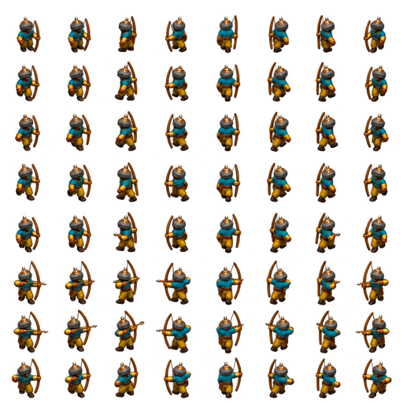

Saracen longbow — experimental sprites
First art and native-format prototype. Review the silhouette, facing directions and motion at the intended game size.
The first two facing columns and several motion phases remain too similar. This preview shows the source teal palette. In-game, the tunic is tinted to the player's color; missing ordinary-life poses use native Saracen shortbow graphics. Dedicated shadows for the new frames are still missing.
